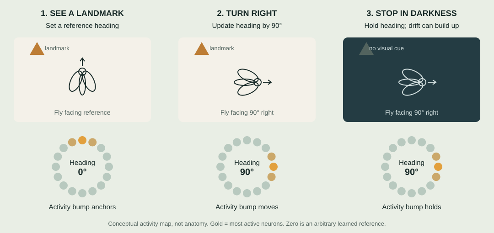
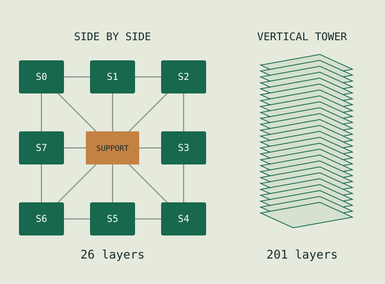
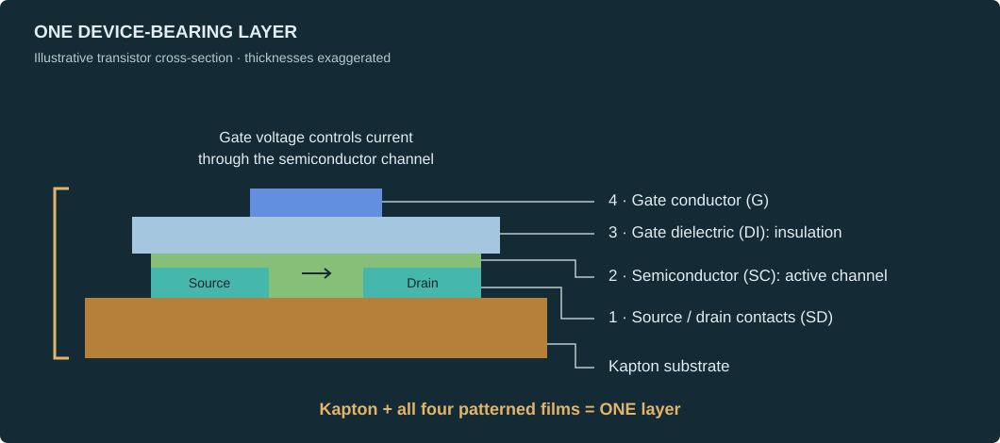
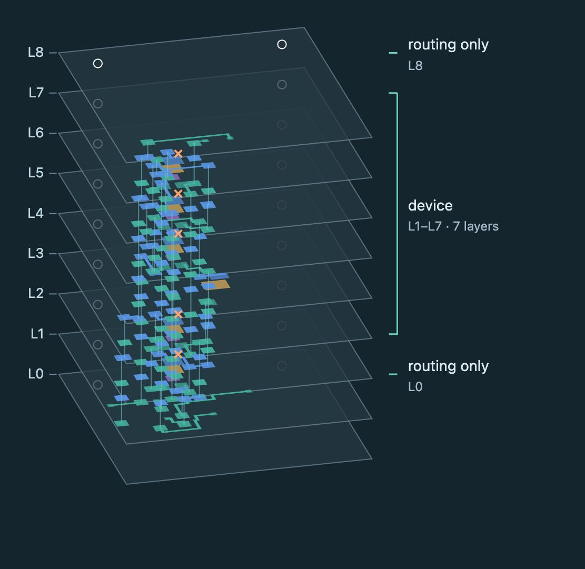
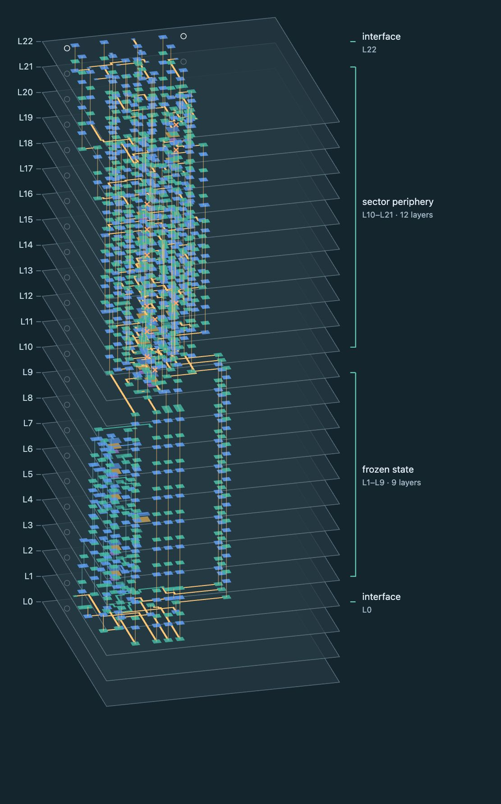
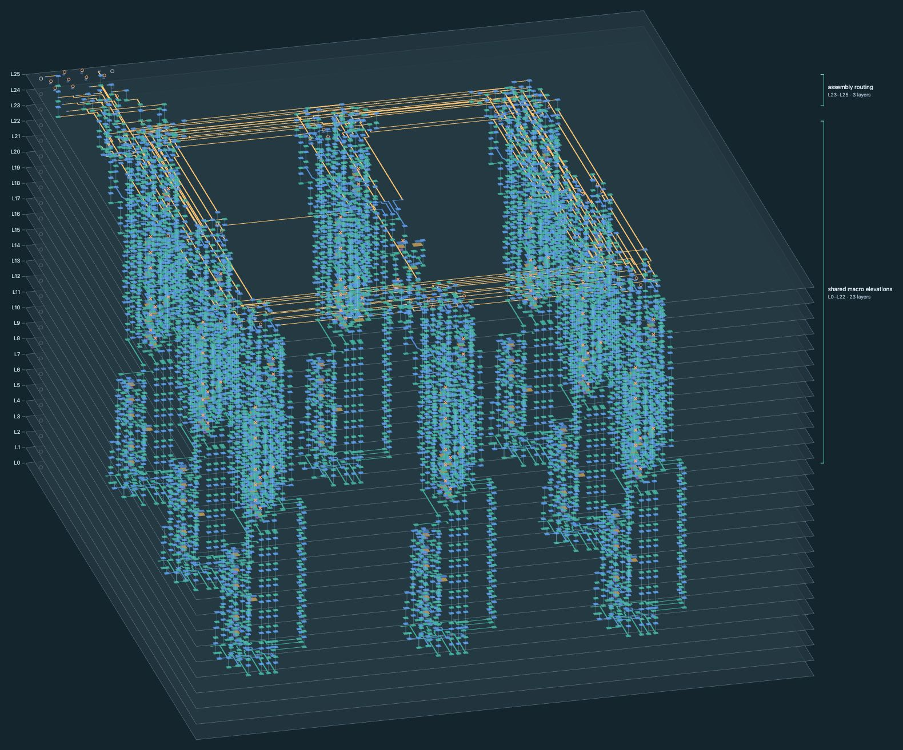

1. The circuit
Behavioral and transistor-level SPICE models of a ring-attractor compass. Eight heading sectors plus shared reference, bias and control circuitry: 323 devices total.
Start with a small, recurrent circuit that does something understandable: maintain a heading, move it when you turn, and tether it to a landmark.
Our demonstrator is inspired by the fruit fly's compass network. The goal is to build that computation in actual transistors and passives, distributed through a stack of printed substrates.
Imagine seeing a landmark, closing your eyes, and turning. You still have a sense of which way you face. A fruit fly has a small brain circuit that does something similar.
Neurons arranged around a ring represent heading. A localized “bump” of activity marks the current direction. Visual landmarks anchor that estimate; signals about turning move the bump. When the fly stops in darkness, the activity can persist, though its estimate gradually drifts.

Our circuit recreates that basic computation with analog transistor activity. Each Sector handles one part of the heading representation; the connections between Sectors let the activity reinforce itself and move around the ring.
Biological basis: Seelig & Jayaraman, Nature (2015). Our eight-Sector demonstrator is a simplified engineering model.
Behavioral and transistor-level SPICE models of a ring-attractor compass. Eight heading sectors plus shared reference, bias and control circuitry: 323 devices total.
A 39-device Sector with a frozen State block inside it, and an 11-device shared support block. Both have closed mapped internal routing under the current geometry checks.
Eight copies of the Sector, with rotated electrical bindings, plus support. Custom placement-and-routing tools preserve the blocks' internal copper and check the resulting connections.

Place & route means choosing where every component sits, then finding physical paths for its electrical connections. These are exports from our routing viewer, using the saved device placements, traces and vertical vias.
One substrate + an additive stack of device-forming films
Each device-bearing layer contains complete printed transistors and passives. Start with Kapton, then add patterned source/drain metal, semiconductor, gate dielectric and gate metal. Together, these films build active devices on that substrate. One transistor can fit entirely within one layer.
A CoreXY printer provides the positioning platform: fitted with ink-dispensing printheads, it deposits each patterned film onto Kapton in sequence, with alignment and material-specific drying or curing between passes. I’ve already tested this approach on a two-layer transistor stack.

Repeat these devices across a layer, then stack the completed layers and connect them with vertical vias. Passive cells use their own patterned structures. Some layers are reserved for routing, but the device-bearing layers actively compute—they are not just stacks of traces.
7 devices · 9 layers

The small analog state element at the heart of a Sector. Its mapped routing closes. The original five body contacts are handled separately by a provisional surrogate contract.
39 devices · 23 layers

Keep the State routing intact, then add 32 devices for recurrent coupling, turn signals and landmark input. Mapped routing closes; 11 other body contacts remain unresolved.
323 devices · 26 layers

Eight copies of the Sector, plus 11 shared bias/reference/control devices. This side-by-side arrangement has 15 geometric open nets and 91 unresolved body contacts.
Click any image to inspect it at full size. Layer spacing is exaggerated; the three views are not at a common scale. Teal/blue show patterned films and existing block wiring; gold shows added assembly routes. These are layout results, not photographs of fabricated devices.
| Measure | Vertical tower | Side by side |
|---|---|---|
| Substrate layers | 201 | 26 |
| Illustrative size | 20 × 20 × 12.67 mm | 52 × 52 × 1.63 mm |
| Geometric open nets | 7 | 15 |
| Detected shorts / geometry issues | 0 / 0 | 0 / 0 |
A “layer” means a substrate plus its printed films—not one film. The tower has 158 device-bearing layers, including 107 with transistors. Neither arrangement is claimed optimal.
Finish the System routes. Resolve 91 unmapped body contacts and validate the existing State surrogate assumptions. Extract the physical circuit and check its behavior. Then fabricate and measure it.
This is a simulation and physical-design milestone. It is not a fabricated chip, a measured efficiency result, or a world-record claim. The cell geometry and material assumptions are provisional.
Recurrent networks depend on their connections. Moving those connections into three dimensions gives us another way to arrange the computation physically. The question is how much that helps once routing, parasitics, fabrication and real devices are accounted for.
The intended application is the cognitive portion of Sentinal Shield's “upside-down radar,” under a newly won contract. The current compass demonstrator is a starting point.
The implementation repository is private. Find me on GitHub to discuss the work.